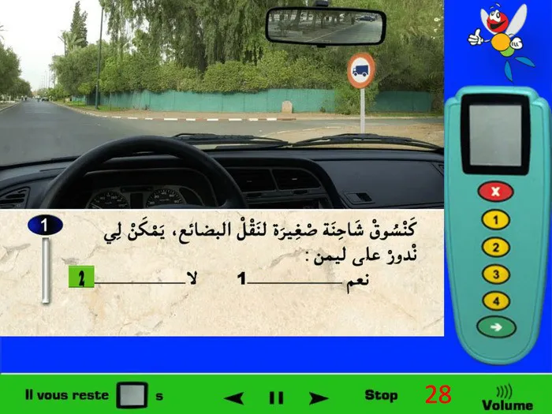
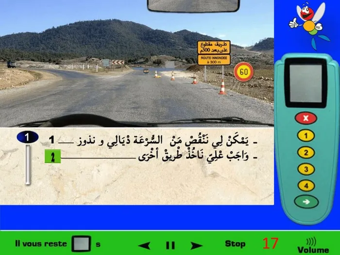
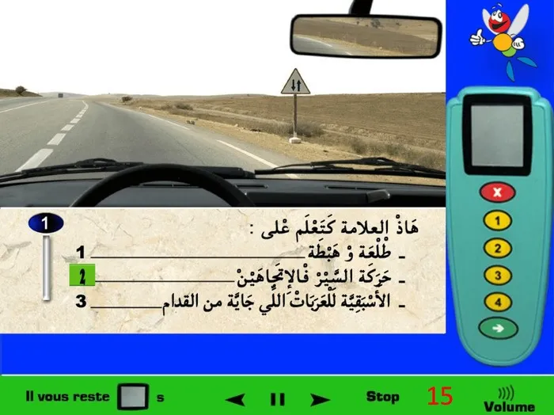

1

الإشارة الطّرقية تشير إلى وجود ممر راجلين في نفس المكان وليس على بعد 50 متر.
الإشارة الطّرقية تشير إلى وجود ممر راجلين في نفس المكان وليس على بعد 50 متر.

شاحنة صغيرة تعني سيّارة عادية، أي التي تتطّلب رخصة السياقة من صنف (ب) لذلك الإشارة الطّرقية تشير إلى المنع، وبالتّالي تمنع مرور السّيارات التي تحتاج إلى رخصة السياقة من صنف (ب) إذن فهي تعنيني، إذن لا يمكنني أن أكمل السّير في الطّريق الموجودة على يميني.

العلامة الطّرقية تعني تحديد السرعة في 40 كلم في الساعة. أي أن العلامة الطّرقية تمنعني من السّير بأكثر من 40 كلم في الساعة. بما أنني أسير ب 40 كلم في الساعة إذن أنا أحترم العلامة الطّرقية.

العلامة العمودية تشير على أنه يوجد لديّ مسلك واحد للسّير العادي، ومسلكين للسيارات القادمة في الاتّجاه المعاكس، هذا ما تشير إليه، وهي لا تشير إلى أنه لا يمكنني استعمال المسلك الثاني لكي أتجاوز بما أن التّشوير الأفقي الخط المتقطّع يسمح لي بذلك. إذن يمكنني استعمال المسلك الذي يوجد على اليسار للتّجاوز.

العلامة الطّرقية تشير على أن المنع الذي كان لديّ سابقا قد إنتهى، بما أننا أسير في طريق سّيار إذن فالسرعة القصوى التي يمكنني السّير بها هي 120 كلم في الساعة، إذن في هذه الحالة يمكنني السّير ب 100 كلم في الساعة أو 120 كلم في الساعة.

عندنا توجد العلامات المؤقتة الخاصة بالأشغال، فيجب عليّ دائما الإنقاص من السرعة.

العلامة الطّرقية تعني ممر للسكك الحديدة بالحواجز. بالنسبة للعلامة الطّرقية التي تعني أن ممر السكك الحديدية بدون حواجز يكون مرسوم فيها قطار.

علامة المنع التي توجد في الصّورة فهي لا تمنع مرور العربات التي يتجاوز علوّها 2 أمتار، لأن علامة المنع هذه فهي خاصة بالعرض وليس بالعلو. بالنسبة للعرض فهي تمنع العربات التي يتجاوز عرضها 2 أمتار يعني مثلا تمنع العربات التي يكون عرضها 2.5 أمتار أو 3 أمتار إلخ.. يعني العربات التي عرضها 2 أمتار يمكنها المرور ولا يطبّق عليها المنع. إذن الإجابة الصّحيحة 2 و 4.

العلامة الطّرقية المؤقتة الصفراء تُعلمني على أنني أتواجد في طريق منحرف (كما هو مكتوب فيها).

بما أنه بقي لي 1 كلم للوصول والعلامة الطّرقية المؤقتة تشير على أنه بعد 300 متر فقط سوف ينقطع الطّريق، إذن سوف أكون مُجْبَرْ لأُغيّر الاتّجاه بما أن الطريق سوف يُصبح مقطوع على بعد 300 متر.

العلامة الطّرقية تعني تحديد السرعة في 60 كلم في الساعة. وبما أنني أسير بسرعة 40 كلم في الساعة إذن يمكنني الزّيادة في السّرعة بشرط عدم تجاوز سرعة 60 كلم في الساعة.

يمكنني تغيير الاتّجاه لليمين و اليسار، لكن إكمال السّير مباشرة فهو ممنوع كما تشير إليه العلامة الطّرقية على أن ذلك الاتّجاه فهو ممنوع.

العلامة الطّرقية تشير على أن المنع الذي كان لديّ سابقا قد إنتهى، بما أننا أسير في طريق سّيار إذن فالسرعة القصوى التي يمكنني السّير بها هي 120 كلم في الساعة، إذن في هذه الحالة يمكنني السّير ب 100 كلم في الساعة أو 120 كلم في الساعة.

العلامة الطّرقية تعني وجود خطر سكة حديدة بدون حواجز على بعد 50 متر بما أنني داخل المدينة، وعند وجود الخطر فيجب عليّ الإنقاص من السّرعة.

العلامة الطّرقية تشير على أن الإجبار بالسّير ب 30 كلم في الساعة الذي كان لديّ سابقا قد إنتهى، إذن بما أنني أتواجد في طريق وطنية والإجبار الذي كان سابقا إنتهى إذن يُمكنني السّير بأي سرعة دون تجاوز سرعة 100 كلم في الساعة.

في هذه الحالة يوجد خطر ملتقى الطّرق على بعد 50 متر ولديّ حق الأسبقية فيه، أي أنه سوف أقوم بالمرور أنا الأول ولن أقوم بإعطاء حق الأسبقية لأي أحد. وفي وجود الخطر فدائما يجب عليّ الإنقاص من السرعة.

العلامة الطّرقية تشير إلى خطر مكان يتواجد فيه أطفال.

يوجد 2 خطوط على يساري، الاول متّصل والثاني متقطِّع، في هذه الحالة أول خط هو الذي يعنيني، أي الخط المتّصل. إذن لا يمكنني تجاوز الخط المتّصل بما أنه أول واحد على يساري.

أنا الان متواجد في طريق سيّار، والعلامة الطّرقية تعني أنه لو قمت بالاتّجاه إلى الطّريق التي تؤدي إلى الصخيرات فسوف أخرج من الطّريق السّيار أي مخرج من الطّريق السيّر وليس الدخول إلى طريق سيّار، لأنني أصلا أنا الان في طريق سيّار.

التّشوير الأفقي السهم المرسوم على الأرض فهو يُشير إلى الإجبار. السّهم المرسوم على الأرض يُجبرني على الانعطاف لليمين.

كما توضح العلامة الطّرقية فهي تُشير إلى ممر خاص أو ممر إجباري للعربات المجرورة باليد، إذن الممر الموجود على اليمين فهو خاص بالعربات اليدوية.

توجد علامة طرقية تُشير على أن السّير ممنوع في ذلك الاتجاه على اليسار، لذلك لا يمكنني تغيير الاتّجاه على اليسار.

العلامة الدائرية الحمراء وسطها رسم شاحنة فهي خاصة بالمنع، وتعني: ممنوع مرور مركبات نقل البضائع (الشاحنات)، كيفما كان الحجم أو الوزن، إلا إذا كانت هناك لوحة تكميلية تحتها تحدد استثناء (مثلاً الوزن أكبر من 3,5 طن). في الصورة ما كاين حتى استثناء تحت العلامة، واللوحة متجهة نحو الطريق على اليمين، إذن المسلك اليميني ممنوع على جميع مركبات نقل البضائع. بما أنك كتسوق شاحنة صغيرة لنقل البضائع، فدخولك لذلك المسلك ممنوع. خاصك متنعطفش لليمين وتكمّل في اتجاه آخر أو تختار طريق بديلة. علامة دائرة حمرا فيها شاحنة = ممنوع على شاحنات نقل البضائع. ما كاين لا وزن ولا استثناء مكتوب يعني ما ندورش لليمين. الجواب الصحيح هو رقم 2.

العلامة الطّرقية على اليسار تحتوي على علامة صغيرة باللون الأصفر فوقها وهذا اللون الأصفر فهو يشير إلى طريق جهوية. (لو كان اللون أحمر تكون طريق وطنية، واللون الأخضر طريق غابوية، واللون الأزرق طريق إقليمية.).

يوجد 2 خطوط على يساري، الاول متقطِّع والثاني متّصل، في هذه الحالة أول خط هو الذي يعنيني، أي الخط المتقطّع. إذن يمكنني تجاوز الخط المتقطِّع بما أنه أول واحد على يساري.

ليس من الواجب عليّ أن أكون في الطّريق على اليمين لأنها طريق خاصة بالدّراجات وليس السيّارات كما توضحه العلامة الطّرقية. وبما أنّه ممر خاص فلا يمكنني الوقوف والتوقّف فيه.

العلامة الطّرقية تشير إلى وجود خطر منعرج على اليمين، وسوف نجده على بعد 500 متر كما تشير إليه العلامة التكميلية تحت علامة الخطر.

التّشوير الأفقي السهم المرسوم على الأرض يشير إلى الإجبار، وفي هذه الحالة وفي ملتقى الطّرق القادم فهو يُجبرني على الانعطاف على اليسار أو تَكمِلة السّير إلى الأمام. (لا يمكنني الانعطاف إلى اليمين).

العلامة الطّرقية تُعلِم على وجود مستشفى.

العلامة الطّرقية تعني تحديد السرعة القصوى في 60 كلم في الساعة، أي أنه يمكنني السير بأي سرعة لكن دون أن أتجاوز سرعة 60 كلم في الساعة.

توجد علامتين عموديتين، العلامة الطرقية الأولى تشير إلى أن المنعرج سوف يكون على اليسار ( تلك الأسهم وراء علامة تحديد السرعة في 40 كلم في الساعة)، والعلامة الطّرقية الثانية فهي تشير إلى تحديد السرعة القصوى في 40 كلم في الساعة.

التّشوير الأفقي السّهم المرسوم على الأرض فهو يُشير إلى الانعطاف الإجباري على اليسار، أي مسلك سوف يستعمله السائقون الذين يريدون الانعطاف لليسار. وهذا السهم المرسوم على الأرض لا يشير إلى منعرج خطير على اليسار.

العلامة الطّرقية تعني على أنني سوف أدخل إلى المدينة، وفي المدينة السّرعة القصوى التي يمكنني أن أسير بها هي 60 كلم في الساعة. أي يمكنني السّير بأي سرعة فقط لا أتجاوز 60 كلم في الساعة.

قدّامي لوحة صفراء كتقول طريق مقطوع على بُعد 300 متر، ومعها حواجز كتسدّ المسار. هاد التشوير مؤقّت ولكن إلزامي بحال التشوير الدائم تماماً: كينبّه أنّ الطريق غير صالحة للسير بسبب فيضان/ماء أو أشغال خطيرة. في هاد الحالة ماشي غير “خطر”، بل انقطاع للطريق، وبالتالي ممنوع نغامر وننقص السرعة وندوز. العمق ديال الماء ما معروفش، وممكن نعرّض راسي والناس للخطر. علامة 60 كلم/س ما كتمنحش الإذن بالمرور وسط الانقطاع؛ هي غير لتخفيف السرعة قبل منطقة الخطر. الواجب القانوني هنا هو: نخفّض السرعة، نوقف قبل الحواجز، ونتبع مسلك التحويل أو ناخد طريق أخرى لان الطّريق مقطوعة. عدم الامتثال للتشوير المؤقّت والحواجز كيعتبر مخالفة ويعرّضك للعقوبات. الخلاصة: ملي تشوف “طريق مقطوع” مع حواجز، ما كتدوزش كيف ما كان، بل كتبدّل المسار وتتبع طريق بديل. الجواب الصحيح هو رقم 2.

العلامة الطّرقية تعني الشاحنات ولا تعنيني كسائق عربة صغيرة، إذن ليس من الواجب عليّ الانعطاف على اليمين للذهاب للرباط.

العلامة الطّرقية تعني انتباه خطر السير سوف يصبح في اتّجاهين (أي في مسلكين). هذه العلامة فهي علامة الخطر الوحيدة التي تبدأ من عند العلامة وليس على بعد 50 متر أو 150 متر (للشرح أكثر كما نلاحظ في الصورة الان يوجد 3 مسالك للسّير، مسلكين 2 خاصين بي، ومسلك واحد للسيارات القادمة في الاتجاه المعاكس. العلامة الطّرقية تشير على خطر السّير في الاتّجاهين سوف يبدأ الان وهذا واضح أيضا من خلال الخطوط المتقطّعة على اليسار، وقربها من بعضها البعض يشير إلى أن الخط سوف يصبح متّصل. أي أنه سوف يصبح هنالك فقط 2 مسالك للسّير، واحد لي وواحد اخر للسيارات القادمة في الاتجاه المعاكس وليس 3 مسالك كما هو الحال الان).

العلامة الطّرقية تمنعني من تجاوز العربات التي لديها 4 عجلات مثل الشاحنات والحافلات والسيارات و .. لكن الدراجات لديها فقط عجلتين 2 ولا تنطبق عليها علامة المنع، أي أنه يمكنني تجاوز الدراجات.

العلامة الطّرقية تعني الإجبار للانعطاف على اليمين، أي أنه يمكنني فقط الانعطاف على اليمين ولا يمكنني الانعطاف على اليسار.

العلامة الطّرقية تعني طريق خاص أو ممر خاص بالحيوانات الاليفة، يعني لا تمنعهم.

عند التّقابل مع عربة في قنطرة فيجب عليّ الإنقاص من السرعة وأيضا التزام اقصى اليمين لتسهيل عملية التّقابل ومرور العربة. في هذه الحالة يجب عليّ أن الوقوف لأن العربة التي أتقابل معها هي التي اندمجت أولا في القنطرة أي الأسبقية لها. (في القنطرة من يندمج أولا هو الذي لديه حق الأسبقية).

الخط المرسوم على الأرض قرب علامة قف فهو يعني الوقوف، أي يجب علي الوقوف عند الوصول إليه والتأكد من الطريق وبعد ذلك يمكنني المرور. (الخط المرسوم قرب علامة قف = علامة قف(.

العلامة الطّرقية تشير على أن المنع الذي كان لديّ سابقا والذي كان تحديد السرعة القصوى في 60 كلم في الساعة قد إنتهى، بما أنني أسير في طريق وطنية إذن فالسرعة القصوى التي يمكنني السّير بها هي 100 كلم في الساعة، إذن في هذه الحالة وابتداءا من هذه العلامة يمكنني السّير بسرعة 60 كلم في الساعة أو 70 كلم في الساعة.

العلامة الطّرقية تشير على أن المنع الذي كان لديّ سابقا والذي كان تحديد السرعة القصوى في 60 كلم في الساعة قد إنتهى، بما أنني أسير في طريق وطنية إذن فالسرعة القصوى التي يمكنني السّير بها هي 100 كلم في الساعة، إذن في هذه الحالة وابتداءا من هذه العلامة يمكنني السّير بسرعة 50 كلم في الساعة أو 70 كلم في الساعة أو 100 كلم في الساعة.

العلامة الطّرقية تُشير إلى خطرين 2، خطر تساقط الأحجار وايظا على خطر تواجد أحجار على الطّريق.

عندما أجد هذه العلامة والتي تشير إلى خطر حريق الغابات، فمن الواجب عليّ دائما أن لا أرمي أي شيئ قابل للاشتعال مثل السجائر.

العلامة الطّرقية تشير فقط أن الطّريق الذي أمامي ليس به مخرج، أي أستطيع إكمال السّير مباشرة لأن العلامة لا تمنعني من ذلك، لكنّها تُعلمني على أنه في أخر الطّريق لا يوجد مخرج.

عندما نتقابل أو نريد تجاوز فارس لا نقوم بإستعمال المنبّه الصوتي، لأن استعمال المنبّه الصوتي سوف يُفْزِع الحصان ويُسبب هَلَعَهُ ولن يستطيع الفارس السّيطرة عليه، لذلك لا نقوم بإستعمال المنبّه الصوتي.

العلامة الطّرقية تشير إلى أنني سوف أدخل لمدينة اجلموس أي سوف أدخل لتجمّع سكني، وأيضا بما أنني سوف أدخل إلى التجمّع السّكني إذن سرعتي سوف تتحدد في 60 كلم في الساعة لأنني داخل المدينة.

العلامة الطّرقية تشير إلى خطر طريق ضيّقة، في هذه الحالة بما أن السيّارة التي أمامي دَخَلَتْ هي الأولى في الطّريق الضيّقة إذن يجب عليّ السماح لها بالمرور هي الأولى لكي أسهِّل عملية التّقابل.

المسلك المتواجد على اليمين فهو مسلك خاص بالدّراجات كما تُشير إليه العلامة الطّرقية العمودية.

العلامة الطّرقية تعني الإجبار ولكن يوجد علامة تكميلية تحتوي على شاحنة، وهذا يعني على أن الإجبار للانحياز لليمين فهو يخص الشاحنات فقك، إذن ليس من الواجب عليّ أن أنحاز إلى اليمين.